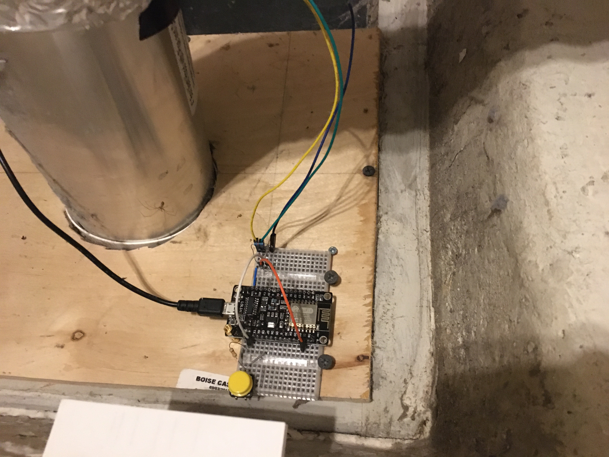

<mat-dialog-content>
    <mat-card>
        <mat-card-title>IOT with ESP8622</mat-card-title>
        <mat-card-content>
            <p>
                I replaced my dryer monitor which was initially based on a Raspberry-PI but found that the ESP8622 is a
                way
                cheaper alternative and it also has wi-fi capability. So I wanted to create a diy kit that someone can
                easily assemble with preloaded code. </p>
            <div>Upon fresh startup, the microcontroller will go into AP mode and the user can use a phone/laptop to
                connect to the webserver to configure the WIFI SSID. After that, the microcontroller will reboot and
                connect to the house WIFI. The yellow button in the picture allows the user to go back into wifi setup
                mode if there are issues.</div>
            <div>The pushing of data to the cloud and visualization of the data remains the same as before.</div>
            <div class='div-image-container'>
                
            </div>
        </mat-card-content>
    </mat-card>
</mat-dialog-content>